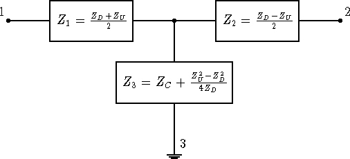
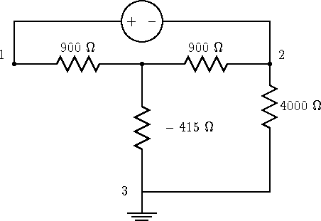
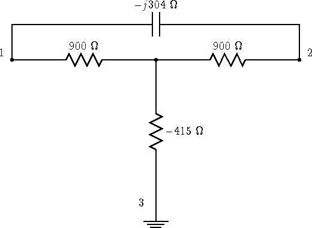
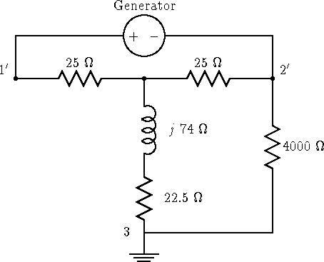

Kevin Schmidt, W9CF
6510 S. Roosevelt St.
Tempe, Arizona 85283
Since a simple multiband antenna is a center fed wire fed with twinlead or windowline to an antenna tuner, a beginning ham (and even some old timers) can wonder what is the best or at least a good way of handling the two jobs of impedance matching and changing from twinlead or windowline from the antenna to coax at the transmitter.
Typical solutions are summarized as:
 |
In all of the following, I will assume that the balun is a 1:1
choke or current type. Examples are the ferrite bead balun
described by Walter Maxwell, W2DU[1], coiled up coax,
and coax or a bifilar winding through a toroidal core.
A nonradiating balanced transmission line requires that the current
in the two conductors be the same. If, for example,
the balanced line is poorly routed, the currents in the two wires
can become different because of unequal coupling to their surroundings.
Even so, to minimize transmission line radiation near the
transmitter (and operator) the currents in the two wires should still be
equalized at the transmitter. Again, this tells us that the best choice
will be a choke or current balun.
Commercial transmitters have unbalanced outputs. That is the output is taken between the output connectors center conductor and the transmitter case. I will call the transmitter case ground. That is, whenever an impedance is measured between a point in the circuit and ground, it means that the point is close to the transmitter case, and the impedance is measured between that point and the transmitter case.
The two wires
of our balanced transmission line are two connections with some
impedance across them from the antenna. In addition, the lines
will have an impedance to ground. For example a quarter
wave length of twinlead, both wires connected together and driven
against ground will would look like a quarter wave monopole.
If the antenna is not well balanced or if one of the transmission
line wires runs close to another conductor, the line can be
unbalanced to some extent. That means that the impedance measured
between one of the lines and ground is not the same as between
the other line and ground. A general two-wire transmission line
ending up near our transmitter can be represented as a T equivalent
circuit as shown in figure 4. If I put a current into
one wire of the transmission line and remove it from the other,
this is the differential mode of the line. The resulting impedance
I will call ZD or the differential mode impedance. If I connect
both wires together, and drive them against ground, I call
the resulting impedance the common mode impedance ZC . Finally, if the
impedance from each wire to ground is not the same, this is unbalance
which I'll represent as ZU . The labeling in figure 4 shows
how these impedances relate to the three impedances of the T equivalent
circuit. Notice if the twinlead is well balanced that ZU = 0 ,
|  |
These impedances can be measured with inexpensive equipment.
One of my antennas is a ``dipole'' about 60 feet on a leg running
around the outside of my 1 story house. It is fed by about 30 feet
of 300 ohm TV twinlead. The legs of the ``dipole''
are not straight, and it isn't symmetric about the feedpoint since
the shack is at a corner of the house. I have measured
ZD , ZU , and ZC , at 3.52 MHz to be:
| ZD | = |
158 + j 533 | |
| ZU | = |
224 + j 182 | |
| ZC | = |
887 + j 622 |
I now have a circuit equivalent of our antenna and transmission line. Since the circuit for tuners is well known, this leaves only the equivalent circuit for a choke balun to allow us to analyze our tuner-balun-antenna sytem using standard circuit theory.
Two useful and equivalent models of a choke balun are those described by Walter Maxwell, W2DU and Roy Lewallen, W7EL. In Maxwell's model, of a choke balun, he uses the fact that the coax shield is many skin depths thick so that it shields the outside from fields on the inside of the coax. The only place the fields can escape is therefore at the end where the coax is connected to a balun or to some other load. A well shielded transmitter driving one end of the coax therefore can only produce external fields at the other end of the coax. You can think of the transmitter as producing a voltage across the points where the center conductor and the shield of the coax attach. At this point, the internal fields escape, and can cause currents to flow on the outside of the outer conductor of the coax.
The equivalent setup is is shown in figure 5. The transmitter
applies a voltage between the inner and outer conductors
of the coax, and the outside of the outer conductor of the coax
is then another part of the system. If I use no balun, and simply
connect our coax to the twinlead, center conductor to terminal 1 and
shield to terminal 2, the transmitter applies a voltage
across terminals 1 and 2 in figure 4. The outside of the outer
conductor presents an impedance
ZShield
back to the case of the transmitter
which I have taken to be terminal 3. That means that this impedance is
placed from terminal 2 to 3 as shown in figure 5.
A choke balun made by coiling up coax would change the impedance
of the outside of the coax shield to the inductive reactance of the
coil. A choke balun made from ferrite beads slipped over the outside
of the coax will also increase this impedance. In his July 1983 QST
article
Maxwell gave measurements of about 15.6 + j13.1 ohms per bead at 4 MHz
for #73 beads.
(However, I recently bought a bead balun kit at a hamfest which claimed to be
50 #73 beads. My balun measured 660 + j438 ohms or 13 + j9 ohms
per bead 4 MHz. Apparently, all beads are not created equal, and
it is prudent to make a few measurements to see how many beads
are needed to make a good balun with your materials.)
Adding this impedance in series with
ZShield gives
the balun common mode impedance ZBalun and
the circuit shown in figure 6. Since there is only a single
connection to ground, I have dropped this connection to simplify the
circuit diagram. Notice that ZBalun is
connected in series with ZC so it effectively just increases ZC .
Maxwell's analysis gives a simple rule for understanding a choke balun connected to the three terminal network given by our twinlead fed antenna. Simply connect the balun common mode impedance from the terminal 2 to 3, and drive the antenna across terminals 1 and 2. If the current through terminal 3 is made small enough by the balun impedance, then the drive current is balanced between terminals 1 and 2.
Roy Lewallen, W7EL, has given model of a choke balun by using
an ideal transformer as shown in figure 7.
The connection shown is schematically the same
as that normally drawn for a bifilar wound choke balun.
A real balun is not an ideal
transformer (nothing is), so the impedance ZBalun is added.
The ideal transformer performs exactly the same task as the
independent generator in the W2DU model.
The W7EL model is equivalent to W2DU's
model. The advantage is that you can write down a complete equivalent
circuit for the tuner, balun, and antenna immediately without
applying Maxwell's rules.
Roy, W7EL, worked out the math for moving a current balun from output to input of an unbalanced tuner using his model of a choke balun and found that essentially nothing changed.[2] I'll look at a particular case later, but it is easy to see this result using the W2DU model of a choke balun.
Assume a transmitter is connected with a short length of coax to a well shielded unbalanced tuner which is connected to another short piece of coax to our twinlead. Also assume that while the transmitter may be grounded, that the rest of this does not have additional connections.
Since the shield is continuous from the transmitter around the tuner to the end of the output coax, I can apply the same analysis as Walter Maxwell did and what happens inside the tuner and coax is immaterial for what happens outside. Changing the tuner adjustment will change the impedance the transmitter sees, but it does nothing else. In any case, assume that the tuner is always adjusted so the transmitter sees a 50 ohm load.
Now replace the output coax jumper with a 1:1 current balun at the output of the tuner. W2DU's model tells us to replace the inner conductor with a generator across the balun output, and an additional impedance from the choke in series with the shield impedance back to the transmitter.
Move the balun to the coax at the input to the tuner, and analyze the system. In this case, because the tuner is also shielded, the generator that W2DU tells us should be at the tuner input can be moved (with a different source impedance) to the tuner output. In that case all that has changed is the position of the choke.
The only difference between these situations is that we have moved the choke balun to a slightly different point on a feedline. If you built a tuner so that it was a cylinder a foot long with the same outside diameter as RG-8, with the input on one end and the output on the other, you could move the balun from input to output by simply sliding the your ferrite beads along the "feedline" by a foot or so. If you use a air wound coild, you would simply move the coil one foot along the feedline. This really can't do anything useful unless the tuner is poorly constructed. In that case fixing the tuner would be more useful. The one difference that you might see in the two cases would be if the tuner case itself had substantial self capacitance or if it had capacitance back to the transmitter case. In the latter case, a balun at the input of the tuner could be ``short-circuited'' by the tuner-transmitter case capacitance. This might happen if both rested close to a large metal desk or shelves. The tuner case self capacitance is easily estimated. A rough estimate is to take the largest dimension of the case in centimeters, divide this by 2 and you have a rough estimate of the self capacitance of the cabinet in picofarads. For a cabinet of 30 cm on a side this would give 15 pF, or about 3000 ohms at 80 meters - probably not low enough to worry too much about, but the most sensible place to put a balun is on an unbalanced tuner's output, like it is on nearly all commercial tuners, and not on its input.
Notice that the above says nothing about the effectiveness or lack of effectiveness of the balun. It simply says it is essentially equally effective or ineffective on the input and output sides of an unbalanced tuner.
Let me analyze a simple case of a perfect quarter wave balanced line with a 300 ohm characteristic impedance terminated in a 50 ohm resistor. The line goes vertically straight up and the ground is assumed perfectly conducting. The reason for all of these assumptions is so I can make simple estimates of what the impedances are. The situation I am modeling is the case where the input to the feedline has a small common mode impedance, and a large differential mode impedance.
ZD = 3002/50 or 1800 ohms resistive. ZC will be the impedance of a quarter wave vertical driven against ground or about 35 ohms resistive. Z1 = Z2 = 900 ohms, Z3 = -415 ohms, where the labeling is given in figure 4.
Now lets hook up our ferrite bead balun by connecting the
shield of the coax to terminal 2 and the center conductor to 1.
A large ferrite bead balun will introduce an impedance of around
|ZBal| = 6000 ohms from point 2 to ground. (Walter Maxwell's March
1983 QST article gives these values,
he measured about 6000 ohms with both R and X
around 4000 at 4MHz for a bead balun made from 300 #73 beads). Again,
to simplify things I'll just assume the balun is resistive and has a
resistance of 4000 ohms. The circuit looks like a driving voltage
across
Z1 + (Z2 || (ZBalun + Z3)) , where || means take the
|  |
The impedance is ZD/2 + (ZBalun + ZC - ZD/4)ZD/(2(ZBalun + ZC + ZD/4)) . For the balun to work well the second term should also contribute ZD/2 , so I want (ZBalun + ZC - ZD/4)/(ZBalun + ZC + ZD/4) to be close to one. That is I want ZBalun + ZC to be much larger than ZD/2 . Checking this case, ZBalun + ZC is about 4000 ohms, and ZD/2 is 900 ohms, so the second term is about 80 percent of the first. That means for 1 volt across the terminals, there will be approximately 1/2 volt across the ferrite. The relative dissipation in the balun is therefore 1800/(4 x 4000) or 11 percent. At 1500 watts output that's about 170 watts dissipated in the balun which may be more than it can take. A smaller balun with only a 1000 ohm impedance will be worse.
Another example is to simply take an 1800 ohm 1/2 watt resistor and hook it to your balun. Since the resistor has a very large common mode impedance, you would have Z1 = Z2 = 900 and Z3 a very large value. The balun is now in series with Z3 , and since Z3 is very large, even though the differential mode impedance is identical, there is no problem, in fact in this case, you don't even need a balun since shorting 2 to ground still doesn't allow any substantial common mode current flow.
Now let's see what happens if a balanced tuner is added to the first
case. Picking a balanced L network to transform to 50 ohms I can use a
parallel capacitor of 304 ohms across terminals 1 and 2 as
in figure 9 which has the equivalent circuit shown in
figure 10.
|  |
|  |
The new differential mode impedance is 50 ohms. The new common mode impedance is the old value plus the impedance of the two parallel inductors = 35 +j 74 ohms.
Clearly the balun will work exceptionally well now. For a voltage V across 1' and 2', the power into the load will be approximately |V|2/50 . The power into our balun will be roughly |V|2/(4ZBalun) . The ratio is 12.5/ZBalun or about 1 percent of the of the power for a 1000 ohm balun and 4 times less for the 4000 ohm balun. 1500 watts input gives 5 to 20 watts dissipated which I think a bead balun can easily stand. So changing from an unbalanced tuner with a balun on either the input or output to a balanced tuner with the balun on the input can really help. An advantage a substantially resistive balun like a ferrite balun is that there is no danger of cancellation in the ZBalun + ZC term since the resistive parts of both must be positive.
The idea that an unbalanced tuner will transform the differential
mode impedance to 50 ohms is correct. Why is it that it doesn't help
in reducing the common mode currents? I have already shown that moving
the balun to the input can't help matters. Let's see what happens
to the equivalent circuit when an unbalanced tuner is added. An unbalanced
L network would include a single series inductor rather than the
two that I used above. Adding this single series inductor to
the circuit of figure 11 gives the circuit shown in
figure 12.
The results described here are simple.
Richard Measures, AG6K, described a balanced tuner with a balun on its input in February 1990 QST[3]. Since the balanced tuner transforms the diffential mode impedance to 50 ohms, the tuner and balun combination will work well. The extra cost of the balanced tuner is the main disadvantage.
For cases where a balun on the output of an unbalanced tuner is stressed, a brute force solution would be to use a bigger balun. In some cases this may be the most convenient and least expensive solution. Doubling the size of a bead balun should double its impedance which will cut the dissipation in half and doubling the physical size of the balun makes it better able to dissipate heat.
Another possibility is to change the balanced feedline length. Cecil Moore, W6RCA, has advocated the use of this technique, and has developed methods to switch in extra feedline to tune balanced loads. His methods are described in detail on his Web page http://people.delphi.com/CecilMoore/index.html . One method is to add feedline so that a current maximum is located at the balun connection. The differential mode feedpoint impedance is resistive there and has a value of Z0/SWR where Z0 is the characteristic impedance of the line, for example 300 ohms, and SWR is the standing wave ratio on the line. Since this cannot be greater than Z0 , the balun will perform well.
To measure the differential ZD , common mode ZC , and unbalanced ZU impedances, you need an rf impedance measuring instrument like an impedance bridge, noise bridge, vector voltmeter, or network analyzer. For high frequency work I use an old General Radio GR821A twin-T admittance measuring circuit. The main disadvantage of using an old piece of gear like this is that it is slow. The main advantage is that they can be found for very little money, and they measure impedance from 0.4 to 40 MHz. For these measurements, the case of the GR821A is the ``ground.'' I normally set it on the operating desk with a strap to the same safety ground point that the transmitter connects to. The GR821A measures admittance, and requires corrections to the measured values as described in its manual. The GR821A easily measures high impedances, but low impedance values are often outside its range and require the use of a series capacitor to bring the impedance into range. The impedance of the capacitor can then be subtracted off. The inclusion of the corrections, and conversion from admittance to impedance is conveniently done using a programmable calculator or the shack computer. I have written a web based applet that does this. It is available at http://fermi.la.asu.edu/w9cf , and will run within any Java activated web browser. Many hams have noise bridges, and these can be used if they are fairly accurate. To measure high impedances, they will generally require the addition of a shunt capacitor to bring the impedance into the range of the bridge. Again a programmable calculator or computer is handy to do the needed calculations to get the correct impedance.
I measure ZC by connecting both leads of the twinlead together and measuring the impedance to ground. Next I connect wire 2 to ground and measure the impedance between wire 1 and ground and call this Za . Reversing the connections, by grounding wire 1 and measuring between wire 2 and ground gives Zb .
A straightforward application of circuit theory gives the equations:
| ZD | = | ||
| ZU | = | (1) |
| S | = | ZaZC(2Zb2 - ZaZC) + ZaZb(2ZC2 - ZaZb) | |
| + | ZbZC(2Za2 - ZbZC). | (2) |
If Za = Zb , the system is balanced and ZU is zero. In that case, the expression for the differential mode impedance also simplifies to
ZD =  only when Za = Zb only when Za = Zb
| (3) |
Obviously, the calculations above are tedious unless a programmable calculator or a computer program are used.